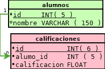

En el contexto de bases de datos relacionales, una clave foránea o clave ajena (o Foreign Key FK) es una limitación referencial entre dos tablas.
La clave foránea identifica una columna o grupo de columnas en una tabla referendo (hija) que se refiere a una columna o grupo de columnas en otra tabla referenciada(maestra ó padre). Las columnas en la tabla referendo deben ser la clave primaria u otra clave candidata en la tabla referenciada.
 En el ejemplo podemos apreciar la tabla referendo/reverenciada
Ambas tablas deben ser InnoDB y no deben ser tablas temporales.
En la tabla que hace referencia, debe haber un índice donde las columnas de clave extranjera estén listadas en primer lugar, en el mismo orden.
En la tabla referenciada, debe haber un índice donde las columnas referenciadas se listen en primer lugar, en el mismo orden. En MySQL/InnoDB 5.0, tal índice se creará automáticamente en la tabla referenciada si no existe aún.
No están soportados los índices prefijados en columnas de claves foráneas. Una consecuencia de esto es que las columnas BLOB y TEXT no pueden incluirse en una clave foránea, porque los índices sobre dichas columnas siempre deben incluir una longitud prefijada.
Si se proporciona un CONSTRAINT símbolo, éste debe ser único en la base de datos. Si no se suministra, InnoDB crea el nombre automáticamente.
!mysql
REFERENCES nombre_de_tabla (nombre_indice, ...)
[ON DELETE {RESTRICT | CASCADE | SET NULL | NO ACTION}]
[ON UPDATE {RESTRICT | CASCADE | SET NULL | NO ACTION}]
Quizás queda mas claro con un ejemplo mas sencillo.
!mysql
FOREIGN KEY (campo_ref)
REFERENCES nombre_tabla(nombre_campo)
!mysql
CREATE TABLE IF NOT EXISTS `alumnos` (
`id` INT( 5 ) NOT NULL AUTO_INCREMENT,
`nombre` VARCHAR( 100 ) DEFAULT NULL,
PRIMARY KEY (`id`)
) ENGINE=InnoDB DEFAULT CHARSET=latin1 AUTO_INCREMENT=1 ;
!mysql
CREATE TABLE IF NOT EXISTS `calificaciones`(
`id` int( 7 ) PRIMARY KEY AUTO_INCREMENT,
`alumno_id` INT( 5 ),
`calificacion` FLOAT,
INDEX `alumno_calificaciones` (`alumno_id`),
FOREIGN KEY (`alumno_id`)
REFERENCES alumnos(`id`)
ON DELETE CASCADE
) ENGINE=INNODB;
!mysql
INSERT INTO `calificaciones` (`id`, `alumno_id`, `calificacion`)
VALUES (NULL, '2', '5.5');
#1452 - Cannot add or update a child row:
a foreign key constraint fails (
`clase_bd_2`.`calificaciones`,
CONSTRAINT `calificaciones_ibfk_1`
FOREIGN KEY (`alumno_id`)
REFERENCES `alumnos` (`id`) ON DELETE CASCADE
)
Al intentar agregar calificaciones a un alumno inexistente nos genera el error 1452 el cual genera un SQLSTATE: 23000 como podemos ver en la referencia de errores de mysql.